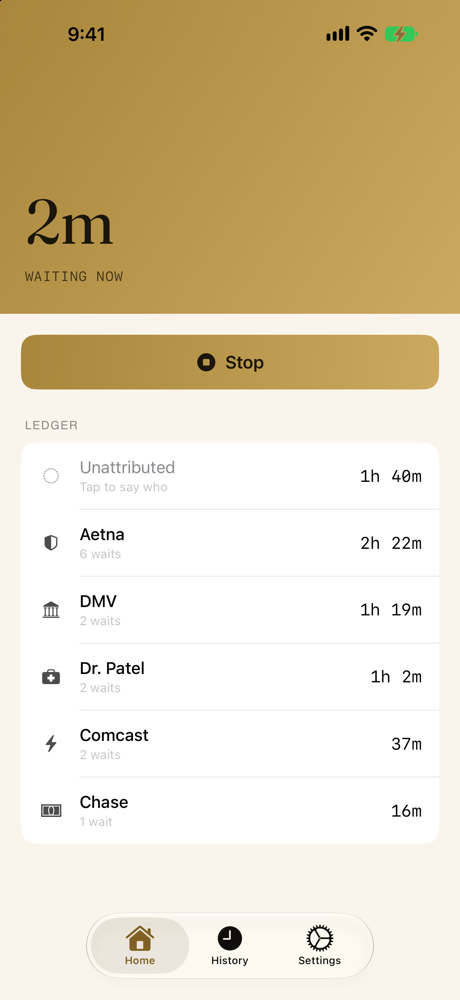
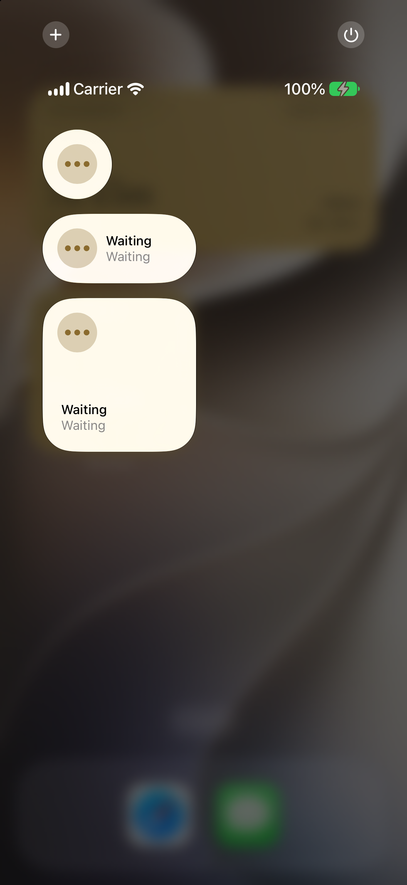
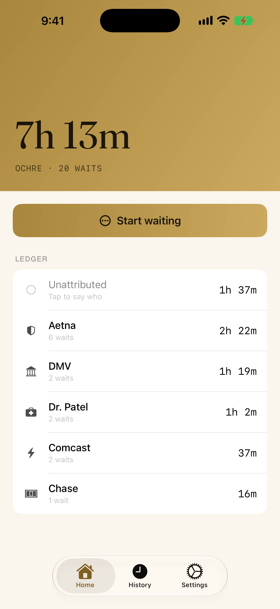
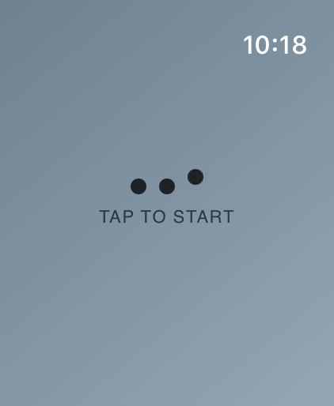
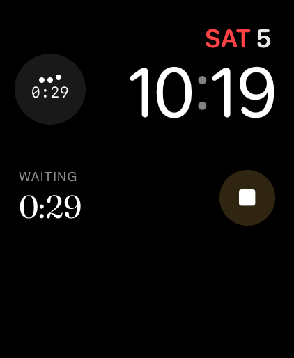
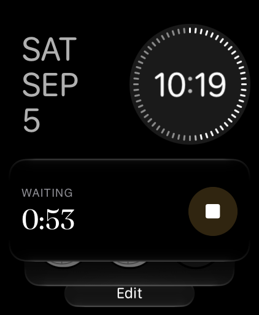
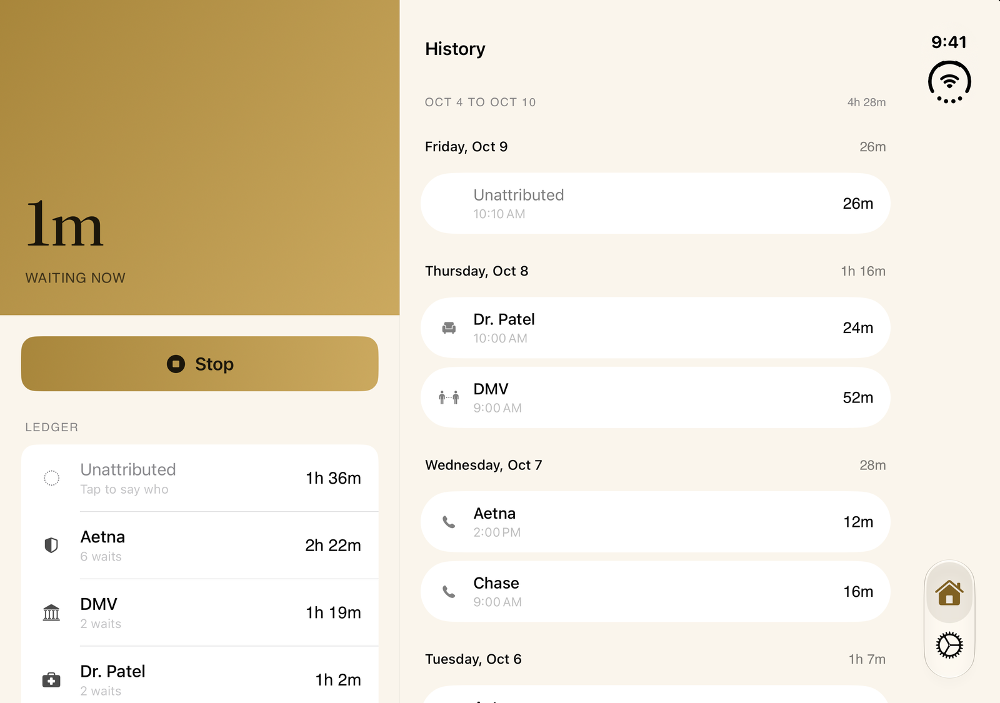

Two hours twenty-two minutes on hold with your insurer.
A bare total is a mood. Knowing you waited seven hours this month changes nothing. Naming who imposed it turns the same number into something you can act on.
Download on the App Store $4.99, one time. iPhone, iPad and Apple Watch.
Moratine
You have been waiting
0:00
since you opened this page
This is how the app works. One tap in, one tap out.
Say who later, or never
Naming the counterparty is optional and happens after the fact, when you have the patience for it. Unnamed waits still count toward your total. Named ones add up into a ledger: who is costing you what, sorted, so the leader is the first thing you see.
An honest record does not require you to do bookkeeping in a waiting room.
- Aetna2h 22m
- DMV1h 19m
- Dr. Patel1h 2m
- Comcast37m
- Chase16m
- Unattributed1h 37m
Twenty waits7h 13m
One tap in, one tap out
The moment you are put on hold is a bad time to use an app. Capture is a single tap from wherever you already are: a Control Center control, a complication or Smart Stack button on Apple Watch, a home screen or lock screen widget, or the app itself.
Nothing to categorize, nothing to fill in. Start it when the wait begins and stop it when it ends.



On your wrist, without your phone
The Apple Watch app records on its own and hands completed waits to your phone when it can, so a wait recorded in a basement waiting room is not lost. A complication shows whether one is running; the Smart Stack starts and stops it.



Side by side on iPad and iPhone Duo
With room to spare, Home and History open together: the wait in progress on one side, every wait before it on the other. Stop a wait and it lands in the list beside you. On iPhone Duo, folded is the Moratine you know and unfolded is the two-pane view, and a wait you are editing stays open when you fold or unfold.

What it does not do
- No streaks
- No scores or grades
- No coaching
- No advice about waiting better
- No location tracking
- No motion detection
- No listening for calls
- No automatic guessing
- No account
- No analytics
- No subscription
- No ads
Yours, and nobody else's
Everything stays on your device. There is no account, no tracking, and no server to send anything to. Full JSON export is built in: every wait, every counterparty, readable without this app. One purchase, no subscription.
Download on the App Store $4.99, one time.